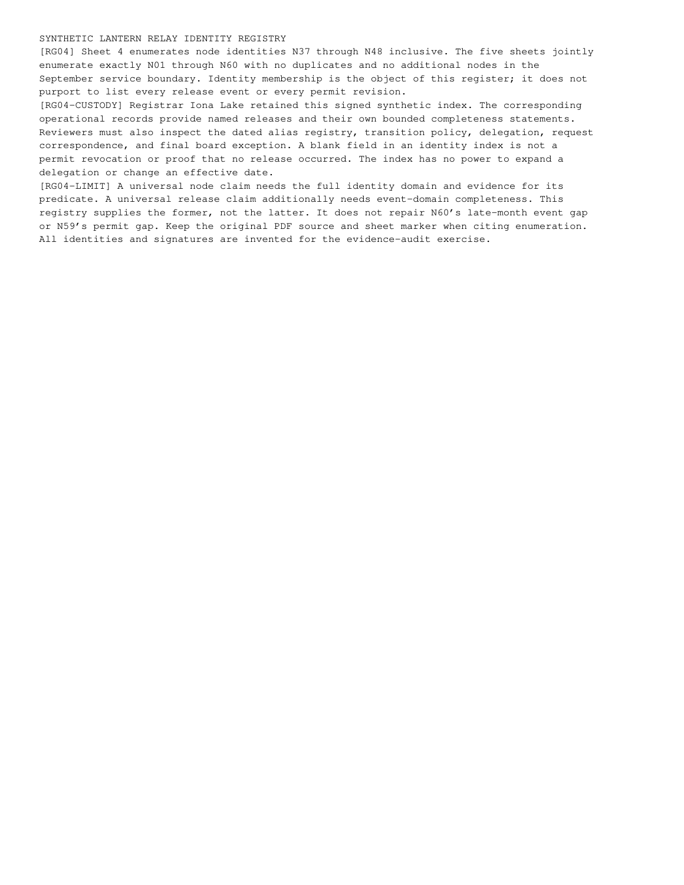

registry-page-4.png
Published path: runs/10-distributed-assurance-mixed/visual-review/registry-page-4.png
Open / download original bytes

validation/runs/10-distributed-assurance-mixed/visual-review/registry-page-4.png · 122,269 bytes · SHA-256 a780ef12d713094a040f61569925b575ec2738e2a7a65158f39531f8fcb3cc2d
